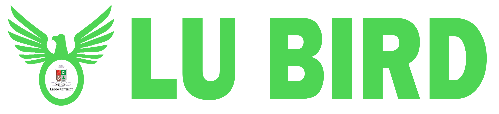

<nav class="navbar navbar-expand-lg header fade-in-top">
  <a class="navbar-brand" 
  routerLink="/home">
    
  </a>
  <button class="navbar-toggler" type="button" data-toggle="collapse" data-target="#navbarColor02" aria-controls="navbarColor02" aria-expanded="false" aria-label="Toggle navigation">
    <span class="navbar-toggler-icon"></span>
  </button>

 
  </nav>
<!-- 
  <div class="collapse navbar-collapse" id="navbarColor02">
    <ul class="navbar-nav mr-auto">
      <li class="nav-item" routerLinkActive="active">
        <a class="nav-link" routerLink="/">ABC</a>
      </li>
      <li class="nav-item" routerLinkActive="active">
        <a class="nav-link" routerLink="/">DEF</a>
      </li>
      
    </ul>
    <div class="dropdown">
      <button type="button" class="btn btn-dark dropdown-toggle" data-toggle="dropdown">
        Manage
      </button>
      <div class="dropdown-menu">
        <a class="dropdown-item" style="cursor: pointer;">Save Data</a>
        <a class="dropdown-item" style="cursor: pointer;">Fetch Data</a>
      </div>
    </div>
    
    
  </div> -->